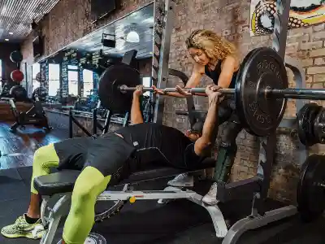
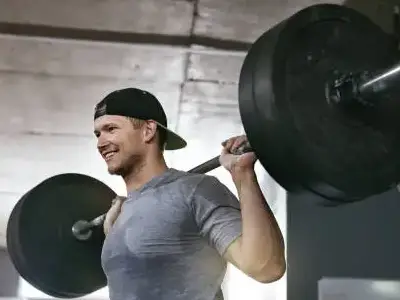
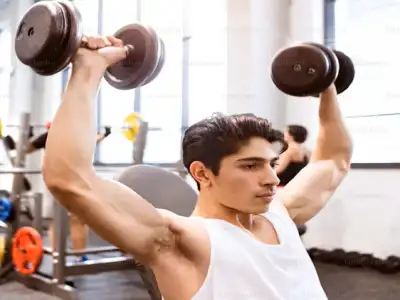
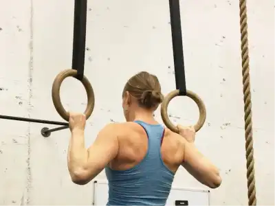

Upper Body Workout
Build strength in your chest, back, shoulders, and arms
Select Your Level
Showing beginner-friendly sets and reps. Click the button to switch to intermediate.
1. Bench Press
A fundamental chest exercise that builds strength in the pectorals, shoulders, and triceps.
Sets & Reps: 3 sets × 10 reps
Tips: Keep your back flat, lower the bar to chest level, and press explosively.
2. Bent-Over Barbell Rows
A compound movement that strengthens the back, lats, and biceps while improving posture.
Sets & Reps: 3 sets × 8 reps
Tips: Maintain a neutral spine, pull the bar to your lower chest, and control the descent.
3. Shoulder Press
An excellent exercise for building shoulder strength and stability throughout the upper body.
Sets & Reps: 3 sets × 10 reps
Tips: Press overhead with control, engage your core, and avoid arching your back excessively.
4. Pull-ups or Lat Pulldowns
A powerful back and bicep builder that improves upper body pulling strength and grip.
Sets & Reps: 3 sets × 6 reps
Tips: Use full range of motion, pull your elbows down and back, and maintain control throughout.
5. Dumbbell Curls

An isolation exercise that targets the biceps and improves arm aesthetics and strength.
Sets & Reps: 3 sets × 12 reps
Tips: Keep your elbows stationary, curl with control, and avoid swinging the weight.
3. Shoulder Press
An excellent exercise for building shoulder strength and stability throughout the upper body.
Sets & Reps: 3 sets x 10 reps
Tips: Press overhead with control, engage your core, and avoid arching your back excessively.
Workout Tips
- Rest 60-90 seconds between sets for compound movements
- Rest 45-60 seconds between sets for isolation exercises
- Focus on proper form over heavy weight
- Gradually increase weight as you get stronger
- Stay hydrated throughout your workout